🇳🇱 Nederlandse versie — Handleiding
- Karim, 16 ans (Afghanistan) — votre tutelle « en cours » : c'est son dossier que vous voyez dans la plupart des captures (rapports, banque, frais, conseils actifs…).
- Fatou, 16 ans (Guinée) — la tutelle qui démarre : vous venez d'être désigné, tout est à faire.
- Ali, 18 ans (Afghanistan) — la tutelle terminée : son dossier est clôturé et archivé.
Sommaire
- Ouvrir l'application
- Créer votre mot de passe
- La visite de bienvenue
- Le tableau de bord
- Voir les échéances d'un jeune
- Créer un dossier (fiche DVZ)
- L'analyse automatique des documents
- Le dossier du jeune en détail
- Le juge de paix et vos rapports
- L'agenda des rendez-vous
- L'argent du jeune (banque)
- Vos frais de déplacement
- Conserver les documents (pièces jointes)
- Traduire un document NL ↔ FR
- Le Guide du tuteur (vos cours)
- Le glossaire des sigles
- Sauvegarder et transmettre
- Clôturer un dossier à 18 ans
- Questions fréquentes
- ⚖️ Les nouvelles règles 2025-2026
- 🧰 Les outils avancés
1Ouvrir l'application
Trois possibilités — choisissez la plus simple pour vous :
- Le lien internet (recommandé) : ouvrez tseli485.github.io/cgra-mena-platform dans votre navigateur (Chrome, Edge, Firefox…). Astuce : dans le menu du navigateur, choisissez « Installer l'application » pour l'avoir comme une vraie application, qui fonctionne ensuite même sans internet.
- L'application de bureau : téléchargez-la depuis la page de téléchargement (Windows, Mac, Linux). Double-cliquez, c'est tout.
- Windows uniquement : tapez
winget install MENA-Tuteurdans un terminal (une fois la publication Microsoft validée).
2Créer votre mot de passe
À la première ouverture, l'application vous demande de créer un mot de passe. C'est la clé qui chiffre toutes les données des jeunes (chiffrement AES-256, le même niveau que les banques).
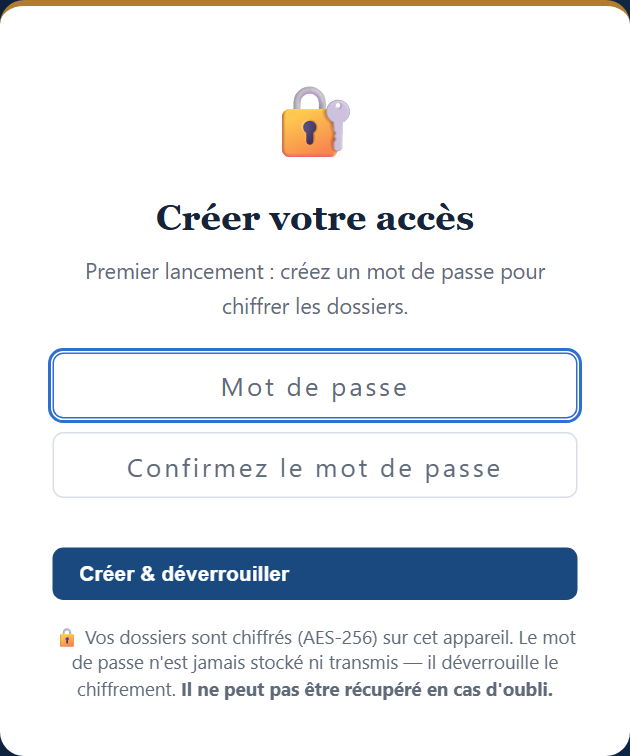
- Choisissez un mot de passe d'au moins 8 caractères, que vous retiendrez.
- Confirmez-le, puis validez.
3La visite de bienvenue
Juste après la création du mot de passe, une fenêtre vous présente les 5 gestes essentiels. Lisez-la tranquillement : c'est le résumé de tout ce manuel.
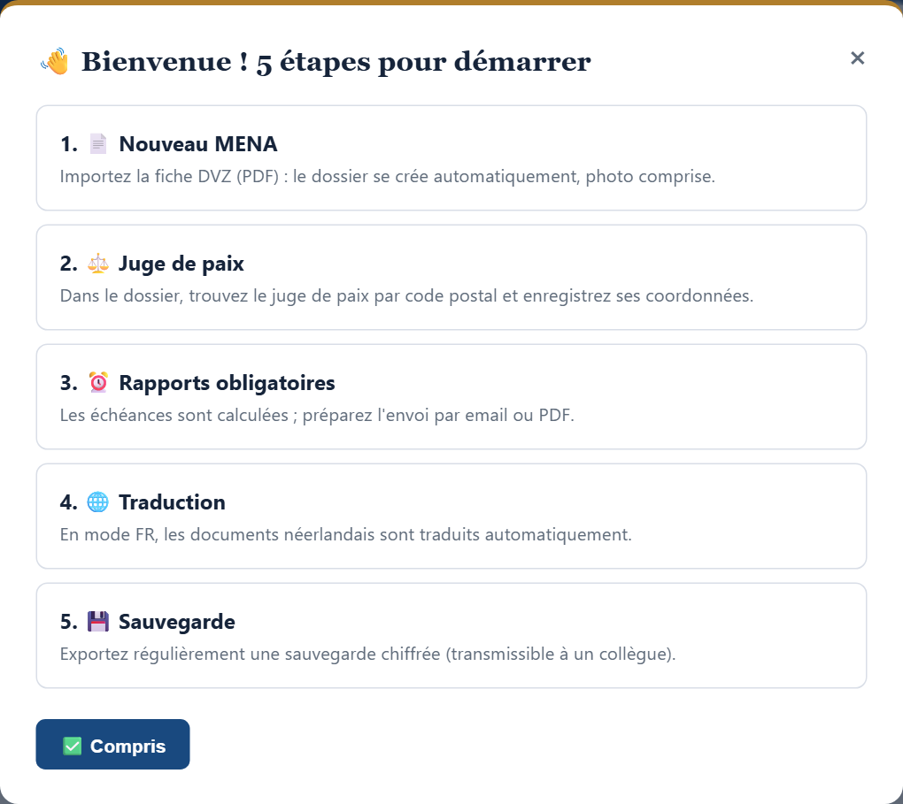
4Le tableau de bord
C'est votre page d'accueil. De haut en bas :
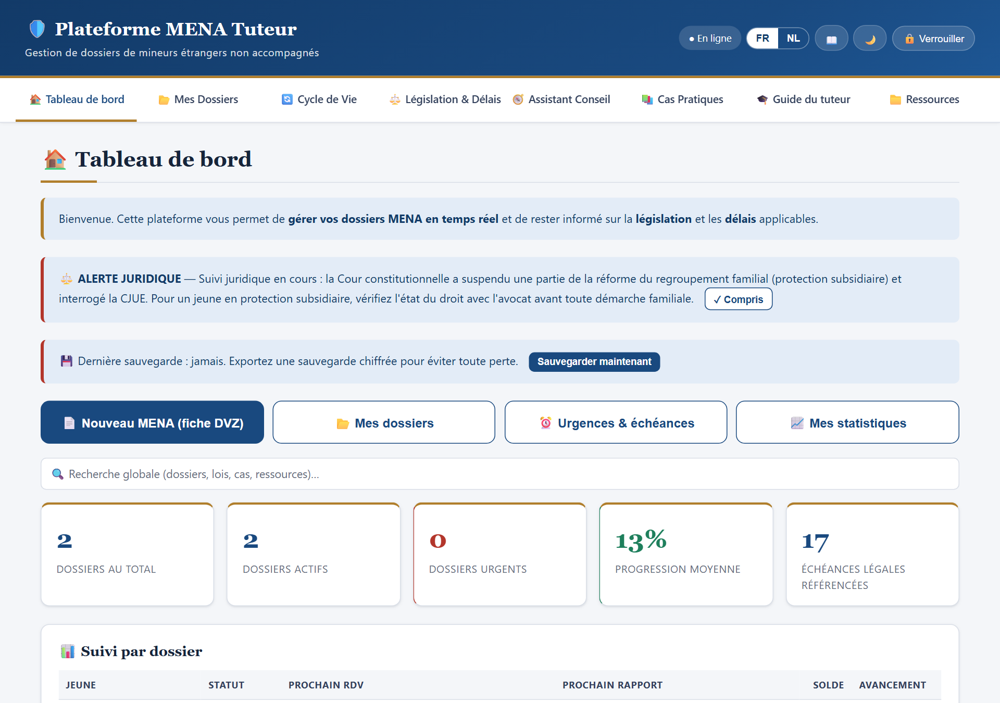
- Le rappel de sauvegarde (bandeau rouge) : il apparaît si vous n'avez pas exporté de sauvegarde depuis plus de 7 jours. Ne l'ignorez pas !
- Les trois grands boutons : créer un nouveau dossier MENA, voir vos dossiers, aller aux échéances.
- La recherche globale : tapez n'importe quel mot (un nom, « regroupement », « Salduz »…) — elle cherche dans vos dossiers, la législation, les cas pratiques et les ressources.
- Les compteurs : nombre de dossiers, urgents, progression moyenne.
5Voir les échéances d'un jeune
Pour éviter toute confusion entre les jeunes, la carte « ⏰ Échéances à venir » n'affiche rien tant que vous n'avez pas choisi un jeune dans le menu déroulant.
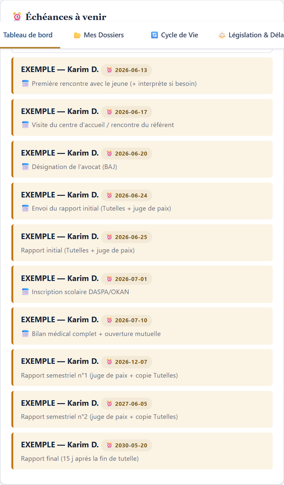
Exemple concret : vous tutorez Karim et Fatou. En sélectionnant Karim, vous voyez SES rapports semestriels et SES rendez-vous — rien de Fatou. Impossible de confondre les délais de l'un avec ceux de l'autre.
Et pour la vue d'ensemble de tous vos jeunes en un coup d'œil, regardez juste en dessous :
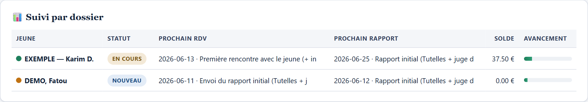
6Créer un dossier : importer la fiche DVZ
Quand le Service des Tutelles vous confie un jeune, vous recevez sa fiche « mineur étranger non accompagné » (souvent appelée fiche DVZ, souvent en néerlandais). L'application la lit pour vous :
- Sur le tableau de bord, cliquez sur 📄 Nouveau MENA (fiche DVZ).
- Cliquez sur « 📎 Lire automatiquement une fiche PDF » et choisissez le fichier PDF reçu.
- L'application remplit les champs toute seule — y compris la photo du jeune, découpée automatiquement. En mode FR, le contenu néerlandais est traduit.
- Vérifiez, complétez si besoin, puis cliquez sur 📁 Créer le dossier.
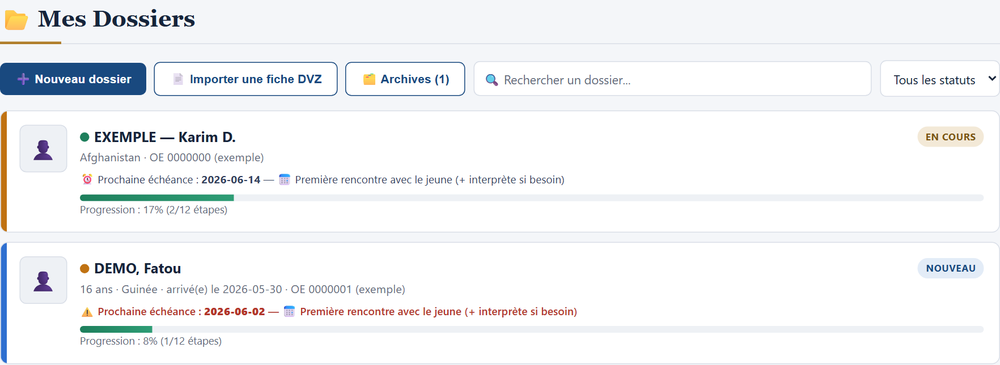
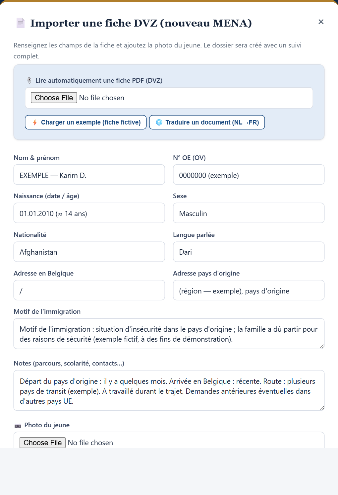
7L'analyse automatique des documents
C'est votre filet de sécurité juridique. Chaque document que vous introduisez (fiche importée, traduction, pièce jointe PDF, texte collé) est analysé : l'application détecte 19 situations importantes — décision de refus, reconnaissance du statut de réfugié, ordre de quitter le territoire, changement d'adresse, convocation à la police ou au CGRA, test d'âge, disparition…
Situation vécue : vous recevez un courrier de 3 pages en néerlandais concernant Karim. Vous le collez dans l'analyse : l'application détecte qu'il s'agit d'un refus du CGRA ET que Karim a été transféré à Charleroi. En un clic : le recours (30 jours) est planifié avec l'avocat, l'adresse est mise à jour, et l'application vous signale que le juge de paix compétent a probablement changé.
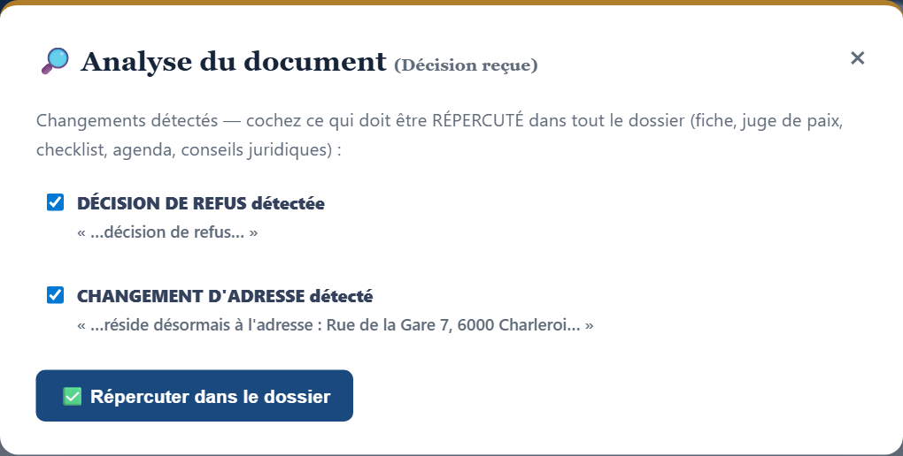
- Cochez les détections correctes (tout est coché par défaut).
- Cliquez sur ✅ Répercuter dans le dossier.
- L'application met à jour tout le dossier : l'adresse, le juge de paix compétent, le statut juridique, la checklist, et crée les rendez-vous nécessaires (ex. « recours dans les 30 jours » → rendez-vous avocat à J+3) ainsi que des conseils juridiques avec les références de loi.
8Le dossier du jeune en détail
Cliquez sur une carte pour ouvrir le dossier complet. Tout est organisé en sections dépliables :
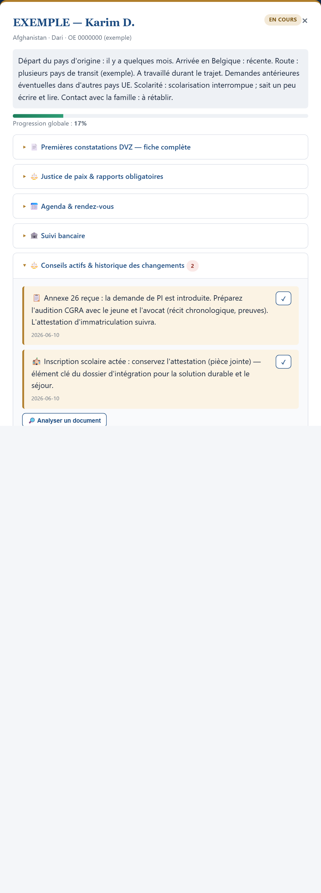
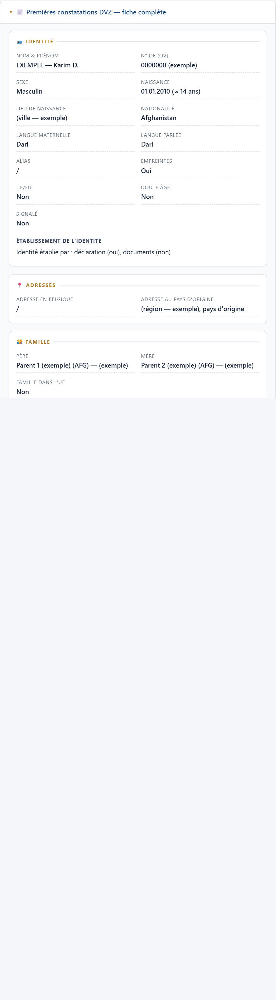
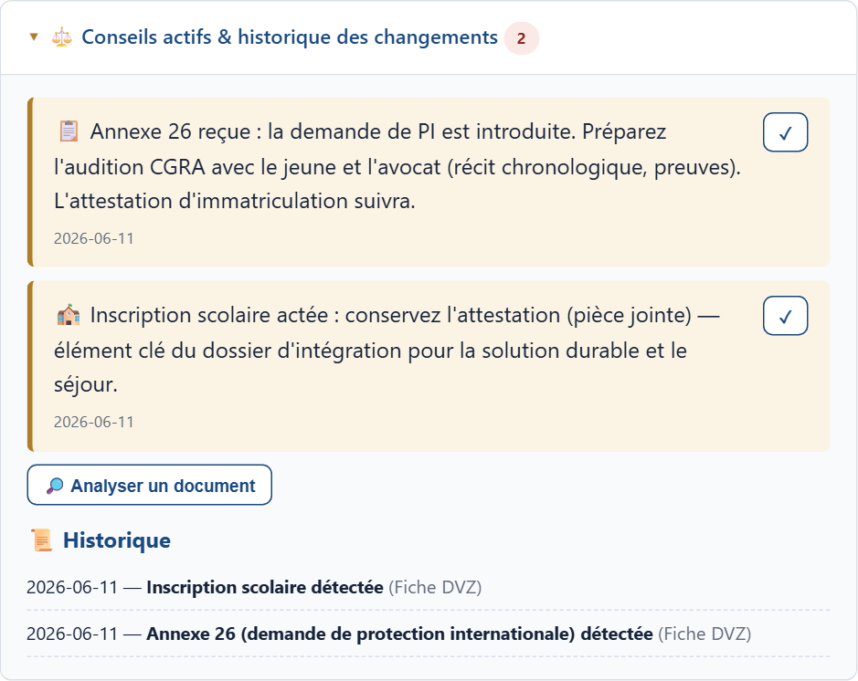
9Le juge de paix et vos rapports obligatoires
En tant que tuteur, la loi vous impose trois types de rapports (loi-programme du 24/12/2002, art. 19 et 24) :
- Rapport initial : dans les 15 jours de votre désignation → Service des Tutelles ET juge de paix ;
- Rapport semestriel : 2 fois par an → juge de paix, copie au Service des Tutelles ;
- Rapport final : dans les 15 jours de la fin de la tutelle.
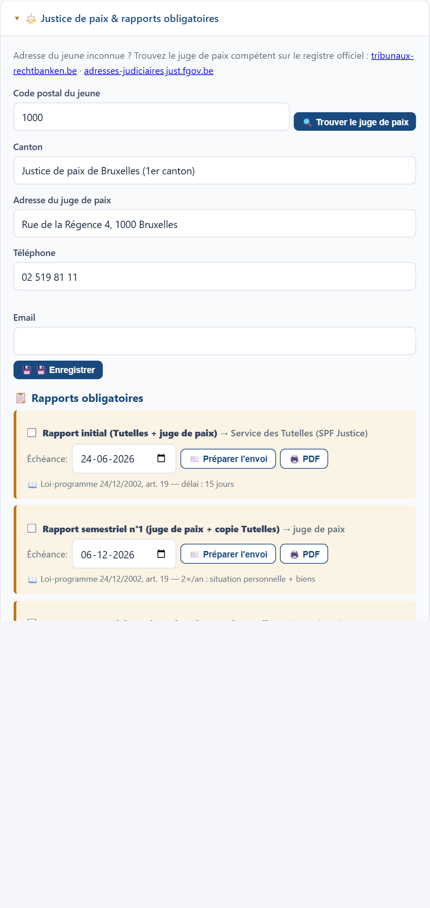
- Entrez le code postal du lieu de vie du jeune et cliquez sur « 🔍 Trouver le juge de paix ». Enregistrez.
- À chaque échéance, cliquez sur 🖨️ PDF : le rapport est généré pré-rempli avec les données du dossier (identité, école, santé, solde du compte…). Vous ne complétez que les zones [À compléter].
- « ✉️ Préparer l'envoi » crée l'email avec le bon destinataire.
- Cochez le rapport une fois envoyé : l'application garde la date.
10L'agenda des rendez-vous
À la création du dossier, l'application planifie pour vous les 10 rendez-vous types du début de tutelle (première rencontre, centre, avocat, rapport initial, école, médecin, banque, préparation CGRA…). Modifiez les dates librement, ajoutez vos propres rendez-vous, et exportez tout vers votre agenda personnel (fichier .ics : Google Agenda, Outlook…).
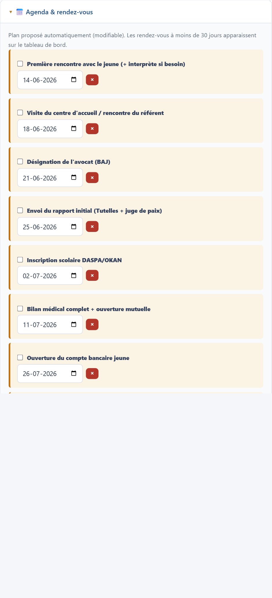
11L'argent du jeune (suivi bancaire)
Vous gérez les biens du mineur sous le contrôle du juge de paix. Notez ici chaque entrée et sortie : l'application calcule le solde et génère le relevé officiel à joindre à votre rapport semestriel.
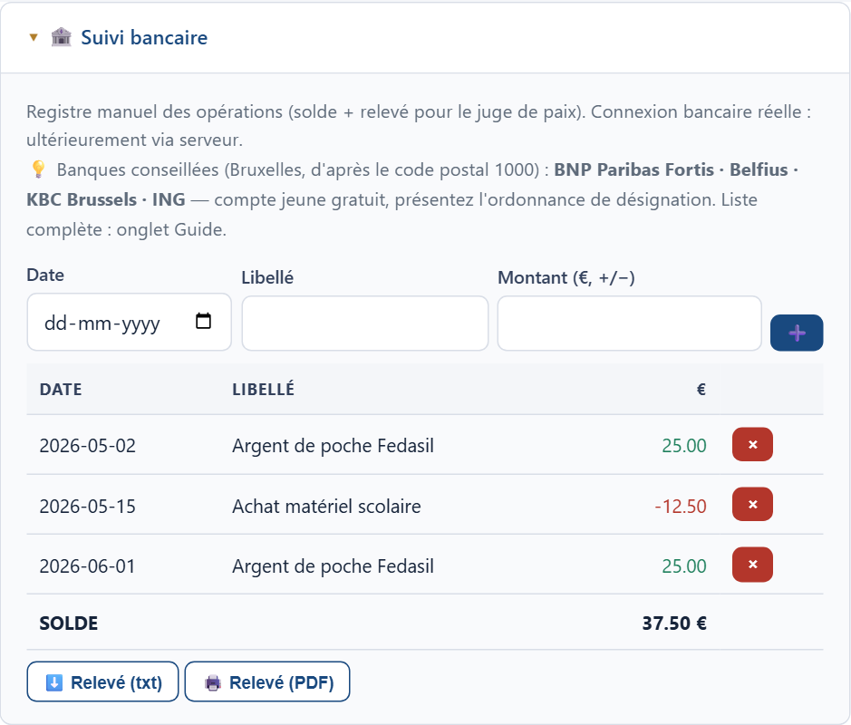
12Vos frais de déplacement (remboursement)
Le SPF Justice vous rembourse 0,428 €/km (tarif indexé — modifiable dans l'application) plus parking et frais justifiés. Notez chaque déplacement le jour même :
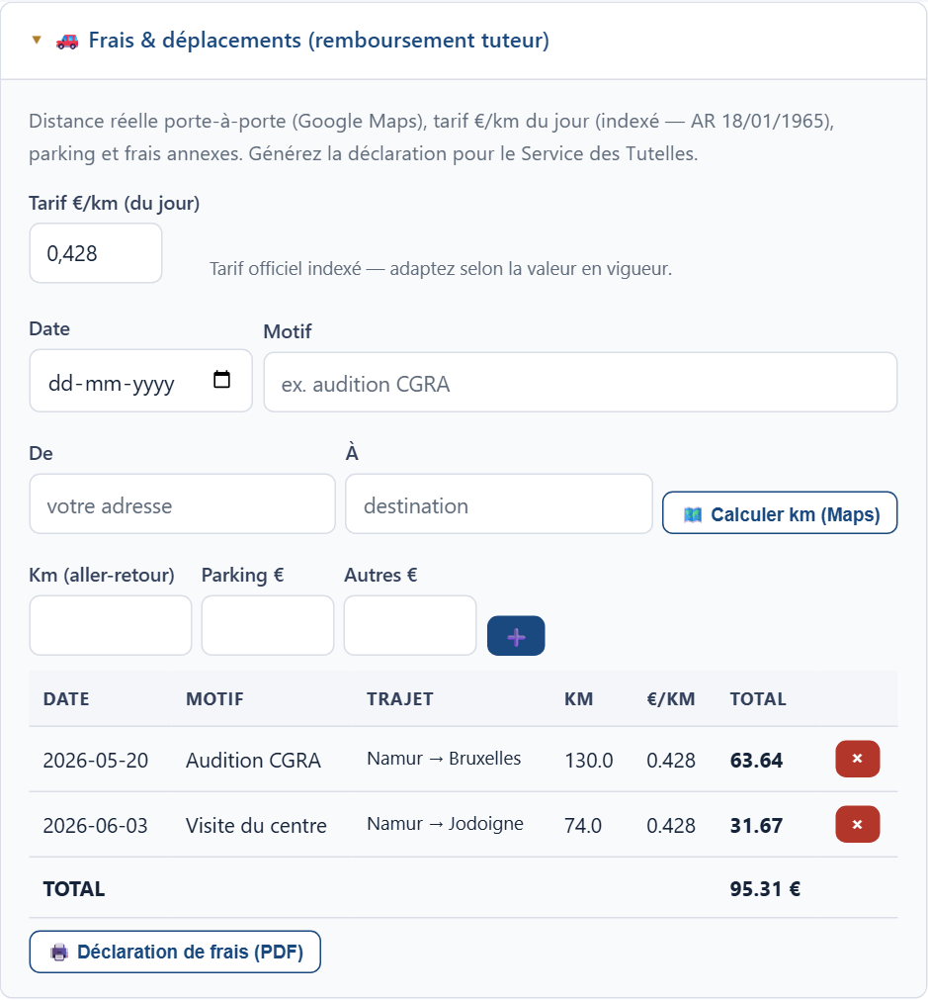
- Date, motif (ex. « Audition CGRA »), départ et destination.
- Cliquez sur « 🗺️ Calculer km » → recopiez les km (aller-retour).
- Ajoutez parking/divers, puis ➕.
- En fin de période : 🖨️ Déclaration de frais (PDF) → à envoyer au Service des Tutelles avec vos justificatifs.
📍 Bien saisir une adresse (et la liste des 101 centres)
Pour que le calcul d'itinéraire trouve le bon endroit du premier coup, utilisez le format « Rue et n°, CODE POSTAL Commune » — par exemple Rue de la Station 12, 6061 Montignies-sur-Sambre. Le code postal élimine toute confusion entre communes homonymes : l'application l'utilise en priorité pour localiser l'adresse.
- Liste déroulante intégrée : en cliquant dans un champ « De », « À » ou une étape de tournée, les 101 centres d'accueil officiels (Fedasil, Croix-Rouge, Rode Kruis, COO…) vous sont proposés — commencez à taper un nom de centre ou de commune et choisissez : l'adresse exacte s'insère toute seule. La saisie libre reste bien sûr possible pour toute autre adresse.
- Consulter les centres : onglet Ressources → « 🏠 Lieux d'hébergement MENA » : les 101 centres classés par région (Bruxelles 17, Wallonie 46, Flandre 38) et par opérateur, avec boutons « Copier l'adresse » et « Maps ». Source officielle Fedasil, vérifiée en juin 2026.
- Google Maps ne s'ouvre pas ? Votre navigateur bloque les pop-ups : un lien direct apparaît alors sous le bouton — cliquez-le.
🧭 Plusieurs visites le même jour ? Le planificateur de tournée
Audition au CGRA à Anderlecht, passage à l'Office des Étrangers, puis visite du centre à Jodoigne — le tout dans la journée ? N'enregistrez pas trois trajets séparés : cliquez sur 🧭 Planifier une tournée (section Frais).
- Entrez votre adresse de départ (mémorisée pour la prochaine fois) et les lieux à visiter (3 champs, bouton « ➕ Ajouter un lieu » pour en mettre plus).
- « 🧭 Proposer l'itinéraire optimal » : l'application localise les adresses et calcule l'ordre le plus économique, en boucle aller-retour depuis chez vous.
- Pas d'accord avec l'ordre ? Les flèches ↑ ↓ réorganisent les visites (1re, 2e, 3e…) — les km se recalculent.
- « 🗺️ Itinéraire complet dans Google Maps » ouvre le trajet réel avec toutes les étapes : vérifiez les km exacts et ajustez le champ si besoin (l'estimation affichée = distance routière approchée).
- « 💾 Enregistrer la tournée en frais » : une seule ligne, avec l'ordre des visites, les km aller-retour et le montant au tarif du jour.
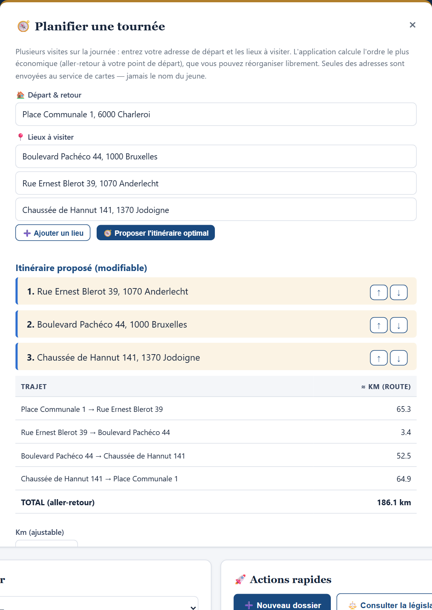
13Conserver les documents (pièces jointes)
Scannez ou photographiez chaque document officiel (annexe 26, attestation, carte, bulletin…) et déposez-le dans le dossier : il est chiffré sur votre appareil. Si c'est un PDF, son contenu est automatiquement analysé (étape 7).
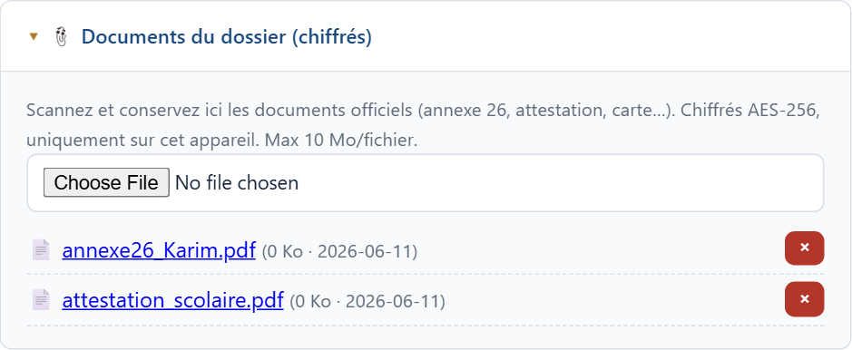
14Traduire un document NL ↔ FR
Beaucoup de documents arrivent en néerlandais. Deux outils, accessibles depuis le dossier (« 🌐 Traduire le document ») ou la fenêtre d'import :
- ➡️ Dictionnaire (instantané) : traduction immédiate, exacte pour le vocabulaire administratif ; les mots incertains sont surlignés en jaune.
- 🧠 Traduction IA (locale) : une vraie traduction neuronale, du niveau de Firefox Translate, dans les deux sens NL ↔ FR. Premier usage : téléchargement unique d'environ 47 Mo, puis tout fonctionne hors ligne. Comme toujours : rien ne quitte votre appareil.
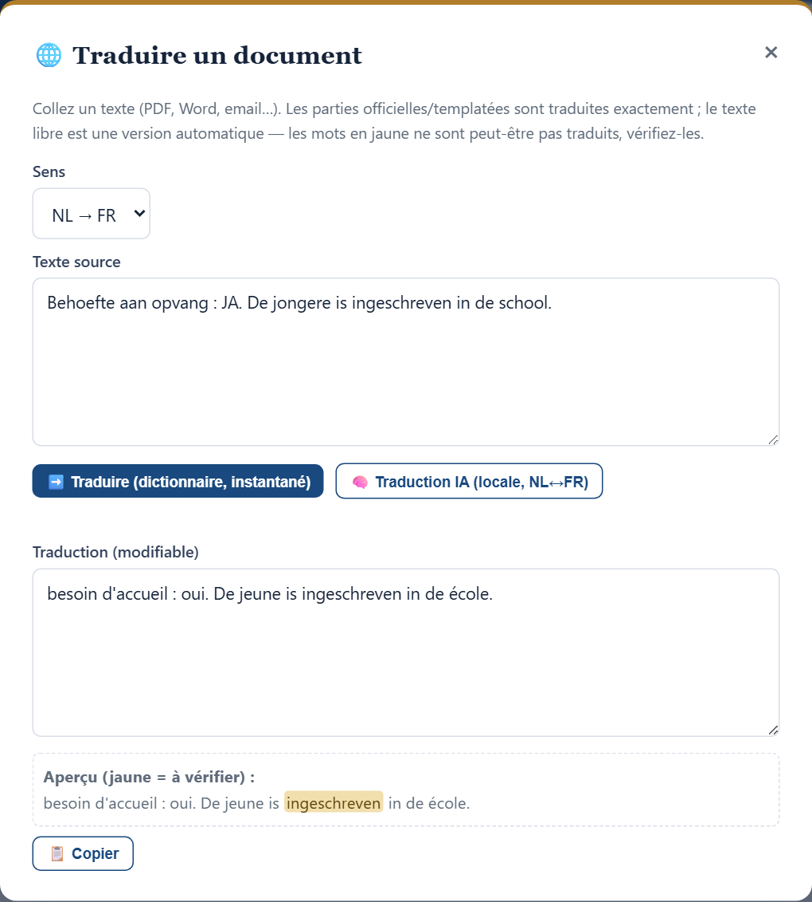
15Le Guide du tuteur : vos cours complets
L'onglet 🎓 Guide du tuteur est votre formation intégrée : 13 modules qui couvrent toute la tutelle, de votre désignation aux 18 ans du jeune. Chaque module contient : un cours simple, les actions dans l'ordre, les documents à remettre (et à qui), les pièges à éviter et les références légales.
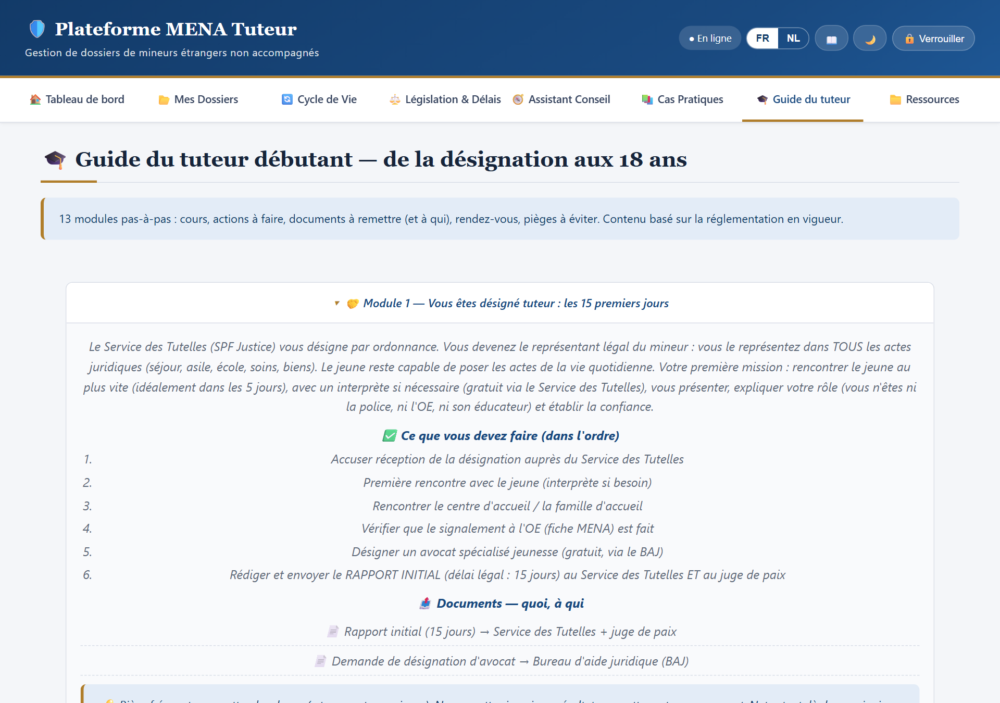
16Le glossaire des sigles
CGRA, OQT, DASPA, MINTEH… Le monde des MENA déborde de sigles. Cliquez sur le bouton 📖 en haut à droite, à tout moment :
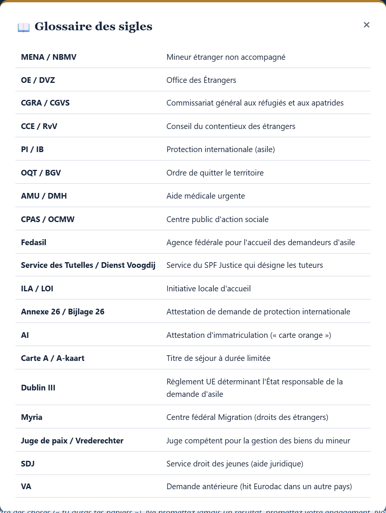
17Sauvegarder et transmettre un dossier
Vos données vivent uniquement sur votre appareil : la sauvegarde est donc votre responsabilité. Une fois par semaine (le bandeau du tableau de bord vous le rappelle) :
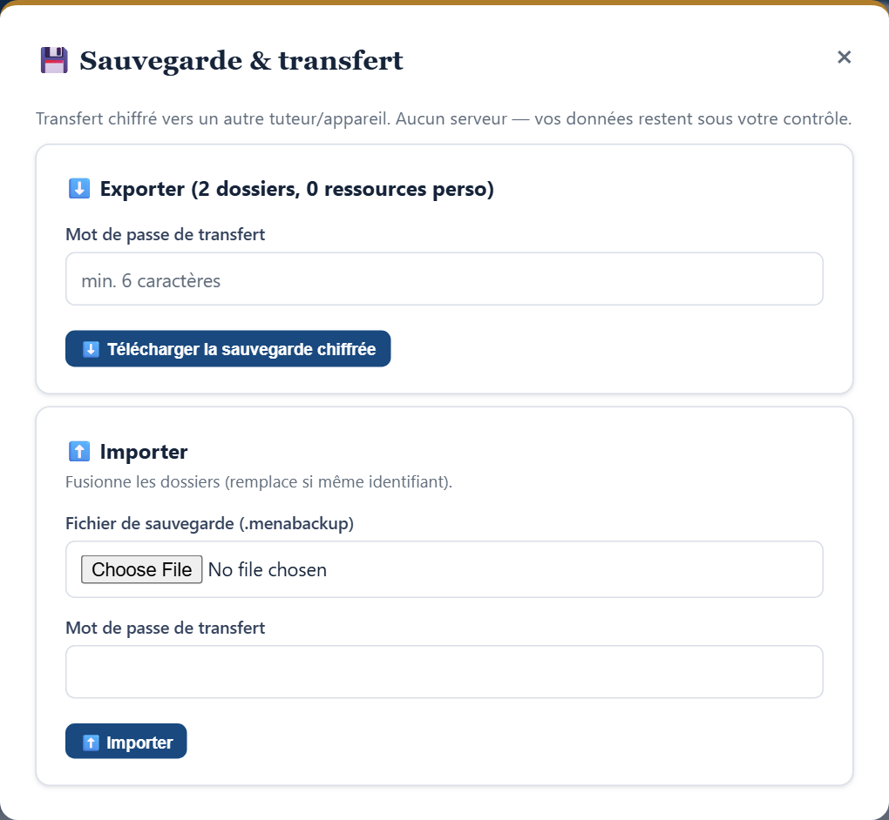
- Tableau de bord → 💾 Sauvegarde / Transfert.
- Choisissez un mot de passe de sauvegarde (il peut être différent du mot de passe principal) → « Exporter ». Rangez le fichier en lieu sûr (clé USB, disque).
- Pour transmettre un dossier à un collègue tuteur : envoyez-lui le fichier
.menabackup+ le mot de passe par deux canaux différents (ex. fichier par email, mot de passe par SMS). Il l'importe via la même fenêtre : dossiers, archives et pièces jointes inclus.
18Clôturer un dossier (les 18 ans)
La tutelle prend fin automatiquement aux 18 ans (préparez la transition dès 16 ans ½ — Module 11 du Guide). Une fois le rapport final envoyé et les documents remis au jeune :
- Ouvrez le dossier → 📦 Clôturer & archiver.
- Le dossier quitte votre liste active mais reste consultable à tout moment dans 🗂️ Archives (chiffré, en lecture seule). Vous pouvez aussi le restaurer ou le supprimer définitivement.
Exemple : Ali vient d'avoir 18 ans. Vous avez envoyé le rapport final, remis ses documents originaux et clôturé le compte en sa présence. Son dossier part aux archives — deux ans plus tard, le Service des Tutelles vous pose une question : vous le consultez en deux clics.
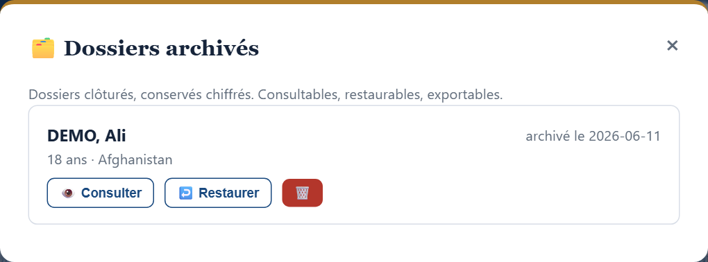
19Questions fréquentes
« J'ai oublié mon mot de passe »
Sur l'écran de connexion, « Mot de passe oublié ? Réinitialiser » efface tout et repart de zéro. Restaurez ensuite votre dernière sauvegarde .menabackup — c'est exactement pour cela qu'on sauvegarde chaque semaine.
« Est-ce que mes données partent sur internet ? »
Non. Jamais. Les dossiers sont chiffrés (AES-256) et stockés uniquement dans votre navigateur/appareil. Même la traduction par IA s'exécute localement. Le code de l'application est public et vérifiable.
« L'application fonctionne-t-elle sans internet ? »
Oui, une fois ouverte une première fois (et installée via « Installer l'application »). Seuls le tout premier chargement et le téléchargement initial des modèles de traduction IA demandent une connexion.
« Comment mettre à jour ? »
En bas de page, « 🔄 Vérifier les mises à jour » compare votre version à la dernière publiée. La version web se met à jour toute seule.
« Un écran ne ressemble pas au manuel »
L'application évolue (en mieux !). Les principes restent identiques ; les captures de ce manuel correspondent à la version 1.5.
« Qui appeler en urgence ? »
- Disparition : police + Child Focus 116 000 (24h/24) + Service des Tutelles + Fedasil — dans les 24 h.
- Audition police : permanence avocats Salduz 0800 90 808 — jamais d'audition sans avocat.
- Service des Tutelles : 02 542 70 51 (urgences : 078 15 43 24).
20⚖️ Les nouvelles règles 2025-2026, expliquées simplement
Le droit des étrangers a fortement changé récemment. L'application est à jour de ces réformes (ses conseils automatiques en tiennent compte), mais vous devez les comprendre. Voici l'essentiel, vérifié sur les sources officielles en juin 2026.
A. Le regroupement familial : la loi du 18 juillet 2025
Entrée en vigueur le 18 août 2025, cette loi durcit considérablement les règles. Ce qui change concrètement pour vos tutelles :
- Le délai « favorable » passe d'1 an à 6 MOIS. Quand votre jeune est reconnu réfugié, sa famille (parents) peut demander à le rejoindre sans devoir prouver revenus et logement — mais seulement si la demande est introduite dans les 6 mois de la reconnaissance. Avant la réforme, c'était un an. Conséquence pratique : dès la décision positive du CGRA, c'est une course contre la montre — l'application crée automatiquement le rappel et le conseil dès qu'elle détecte la reconnaissance dans un document.
- Passé les 6 mois : la famille doit prouver des revenus d'au moins 120 % du revenu d'intégration (environ 2 130 € nets/mois — les allocations sociales ne comptent pas), un logement suffisant et une assurance maladie. Pour la plupart des familles restées au pays, c'est quasi impossible.
- Le silence vaut désormais REFUS. Avant, si l'administration ne répondait pas dans le délai (9 mois), la demande était acceptée d'office. C'est inversé : sans réponse, la demande est rejetée automatiquement, et il faut introduire un recours. Suivez donc activement chaque demande avec l'avocat.
- Restriction propre aux MENA : un parent ne peut plus rejoindre son enfant mineur reconnu réfugié si l'enfant était accompagné de l'autre parent à son arrivée en Belgique.
- Protection subsidiaire — point chaud : la loi excluait le regroupement des parents avec un MENA bénéficiaire de la protection subsidiaire. La Cour constitutionnelle a suspendu cette différence de traitement (arrêt du 26 février 2026, questions envoyées à la Cour de justice de l'UE). Le droit est donc en mouvement : pour un jeune en protection subsidiaire, ne concluez jamais seul — appelez l'avocat et consultez Myria.
B. Le test d'âge : la Belgique condamnée (CEDH, 6 mars 2025)
La Cour européenne des droits de l'homme a jugé que la procédure belge de détermination de l'âge manque de garanties procédurales (violation de l'article 8). Concrètement, si votre jeune est déclaré majeur après le triple test médical :
- le recours a aujourd'hui beaucoup plus de poids — l'avocat doit citer cet arrêt ;
- exigez toujours la copie complète des résultats et la marge d'erreur (souvent ±2 ans) ;
- rassemblez tout document d'identité (taskara, acte de naissance) via la famille — jamais via l'ambassade pour un demandeur d'asile.
L'application cite automatiquement cet arrêt dans son conseil lorsque l'analyse d'un document détecte un résultat « majeur ».
C. L'accueil sous pression (réforme 2025)
La réforme de l'asile de juillet 2025 permet notamment de refuser l'accueil aux personnes déjà protégées dans un autre pays de l'UE, et le réseau d'accueil se réduit (fin progressive de places communales). La Cour constitutionnelle a, là aussi, suspendu certaines mesures (26 février 2026). Ce qui ne change pas : un MENA est prioritaire et a toujours droit à un accueil adapté. Si une place est refusée ou inadaptée à votre jeune, signalez-le immédiatement au Service des Tutelles et à l'avocat — ne laissez jamais un mineur sans solution d'hébergement.
21🧰 Les outils avancés
Cinq outils complètent votre quotidien — tous accessibles en deux clics :
🧮 Le calculateur de délais (dans chaque dossier)
Vous recevez une décision et vous demandez « qu'est-ce que ça déclenche, et pour quand ? ». Ouvrez le dossier → 🧮 Délais : choisissez l'événement (désignation, reconnaissance, refus CGRA, OQT, convocation, expiration de titre) et sa date — tous les délais légaux qui en découlent s'affichent, datés. Un clic les ajoute à l'agenda du dossier. Exemple : « Décision négative du CGRA le 3 mars » → avocat pour le 6 mars, dernier jour de recours CCE le 2 avril.
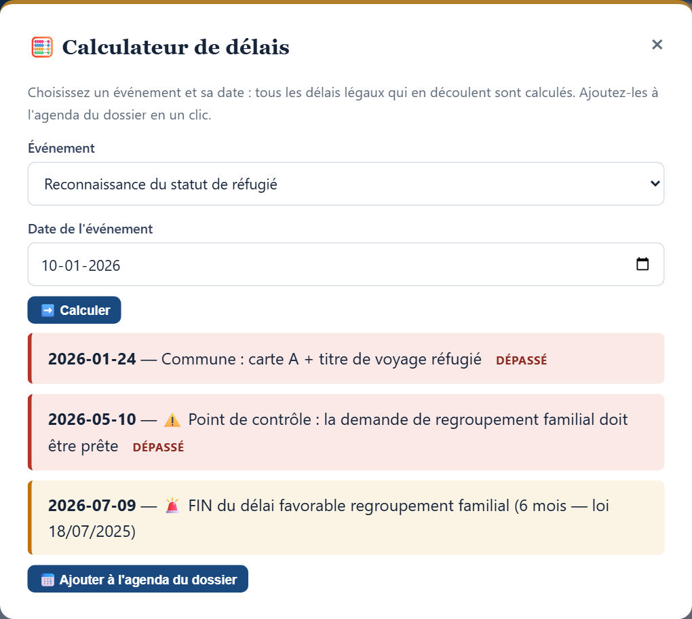
🛂 Préparer l'audition CGRA (dans chaque dossier)
L'audition est LE moment décisif de la demande d'asile. Le bouton 🛂 Préparer audition CGRA ouvre un questionnaire de 8 thèmes (identité, chronologie de la fuite, craintes, événements précis, trajet, preuves, points sensibles, aspects pratiques) à remplir avec le jeune, à son rythme, sur plusieurs séances. Tout est enregistré dans le dossier et exportable en PDF confidentiel pour l'avocat.
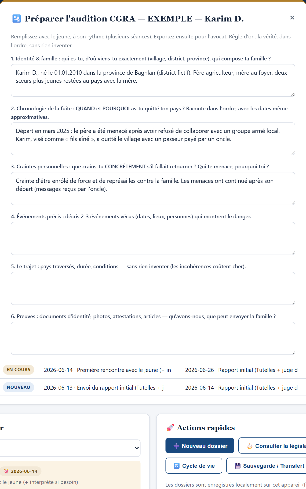
📈 Mes statistiques (tableau de bord)
Le bouton 📈 Mes statistiques résume votre année : rapports envoyés à temps ou en retard, rendez-vous réalisés, conseils à traiter, et surtout le total des kilomètres et le montant à déclarer au Service des Tutelles.
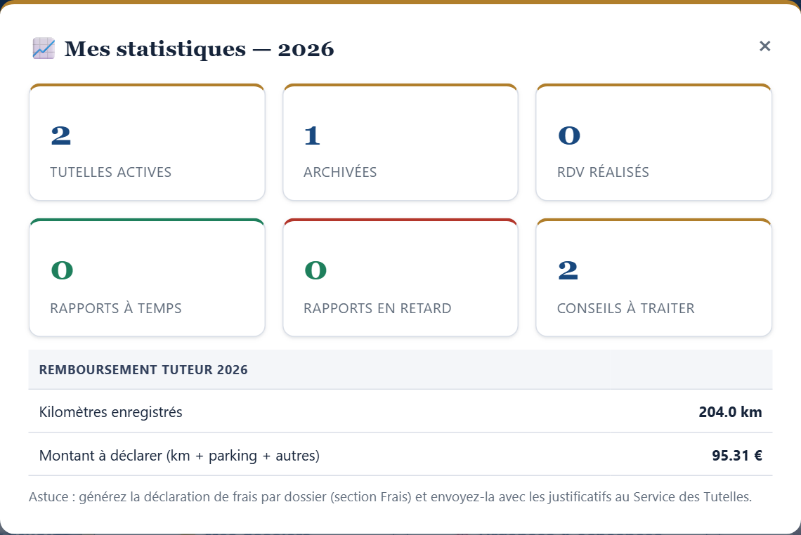
⚖️ Les alertes juridiques en direct
Quand une décision importante tombe (par exemple l'arrêt définitif de la Cour constitutionnelle sur le regroupement familial), un bandeau rouge « ALERTE JURIDIQUE » apparaît sur votre tableau de bord dès que vous êtes en ligne. Lisez-le, puis « ✓ Compris ». Une veille automatique surveille aussi, deux fois par mois, le contenu des pages officielles (SPF Justice, CGRA, Myria, Fedasil).
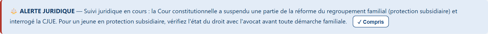
🆕 Les notes de version
Après chaque mise à jour, une fenêtre « Nouveautés » vous résume ce qui a changé — vous savez toujours pourquoi un écran a évolué.
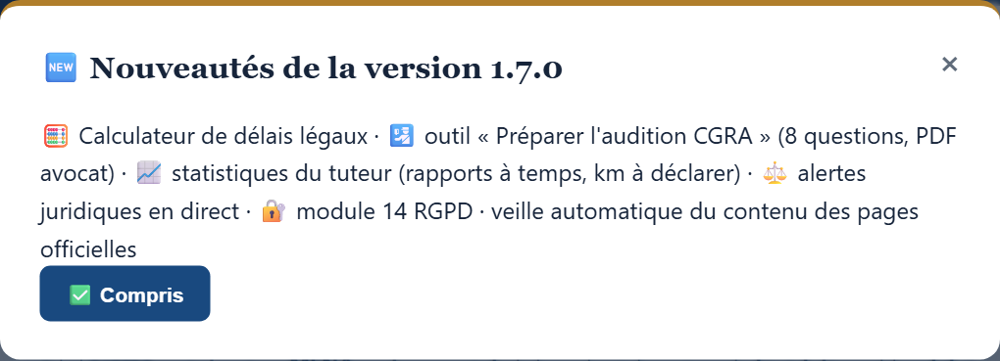